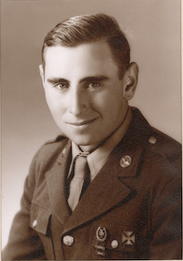

The jovial in jovial.com refers to the JOVIAL computer language. My parents Kay and Ed Foote were both JOVIAL programmers. My parents may have even got to know each other over JOVIAL; my father was on the team that created it, and my mother started using it in 1961.
By the way, the acronym has come to mean "Jules' Own Version of IAL," but within the team it originally stood for "Just Our Version of IAL." IAL stands for "International Algorithmic Language," (or maybe it's "Algebraic"). IAL was an early name for ALGOL.
Here's a rather wonderful video of Jules describing the JOVIAL project:
|  |
Here's what my father has to say about JOVIAL:
I wrote the first JOVIAL interpreter using the front end of the Q31 direct code JOVIAL compiler on the 7090. After that, I stripped out the interpreter and three of us wrote a small compiler (92) to compile the JOVIAL coded 7090 compiler. We also modified the control program with all the bells and whistles needed for debugging, etc. I ran the 7090 computer for the air force acceptance test at the underground facility in Omaha, NB while Jules was the speaker. The test went beautifully.
Next, on to Jovial Timesharing (JTS), a one-pass compiler on the Q32 with many other folks. After that, I maintained JTS and added many interactive bells and whistles.
He tells me that a Q31 is the IBM military version of the Q32, but was located in the underground facility in Omaha, Nebraska. An IBM 7090 is the transistorized (!) version of the 709.
My father started programming in 1955, in New Jersey. In 1959 he moved to L.A. and the System Development Corporation (SDC), to join the JOVIAL team. His time sharing work started in 1962, and continued in 1967 with TINT, an interactive JOVIAL interpreter. He also worked on parallel processing with a FORTRAN compiler for IBM in Westlake Village.
Some other documents:
|
|
|
|
|
My mother started programming at the dawn of the modern computer era, in 1951. She programmed on the SEAC computer, which was the first fully functional stored-program electronic computer in the US. In 1954 she moved to L.A. to work on software for space applications at the Computer Control Company. In 1956 she went to the RAND Corporation in Santa Monica, and in 1957 followed the spinoff to the System Development Corporation (SDC). She designed and programmed air traffic simulations for the Semi-Automatic Ground Environment (SAGE), which was a key part of the US air defense system. She went on to manage the 50 person team responsible for SAGE simulations. In 1961, she started work on experminental programs for air traffic control, using assembly language and JOVIAL. From 1964 through 1966 she worked on an experimental automated teaching system under time sharing (presumably Jovial Time Sharing). In 1966 she moved on to design and implementation of software for space applications, vehicle tracking and telemetry data processing, using JOVIAL and assembly language. Some other documents:
|
|
|
(actual sites had no windows. Image swiped from Norm's blog.) |
|
|
|
{kind=link}
{kind=link}